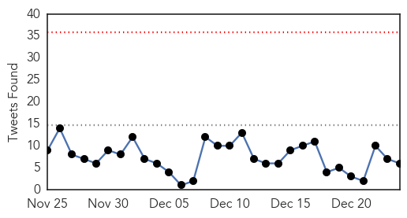
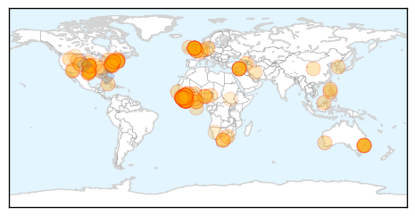
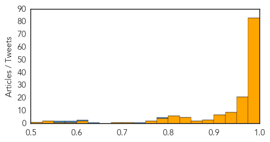
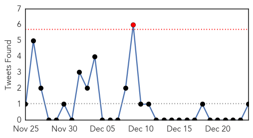
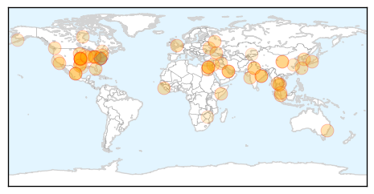

Ebola
30-Day Web Trend
0 alerts, 0 warnings

30-Day Twitter Trend
0 alerts, 0 warnings

Article Locations
Article Confidences
Top Articles:
- 1.000
- Ebola testing kit appoved by FDA
- 1.000
- The Ebola epidemic is slowing in Africa, but it's not yet controlled
- 1.000
- Health authorities report 3 new Ebola cases in Liberia, previously declared Ebola free
- 1.000
- Humanitarian Workers take no break
- 1.000
- the edge of knowledge
- 1.000
- Next in Ebola Plan: UN Teams to Study Lines of Transmission
- 1.000
- Christmas Just Another Day For Those Fighting Ebola In West Africa
- 1.000
- The Next Step For Fighting Ebola Is Detective Work
- 1.000
- Next in Ebola Plan: UN Teams to Study Lines of Transmission
- 1.000
- Up to a dozen U.S. scientists may have been exposed to Ebola sample at CDC lab in Atlanta
- 1.000
- Ebola crisis could last another year: expert Peter Piot
- 1.000
- Ebola: Fighting a deadly virus
- 1.000
- Ebola virus death toll reaches 7,565: WHO
- 0.999
- Ebola epidemic death toll rises to 7588 as virus spreads in Sierra Leone: WHO
- 0.999
- Death toll in Ebola outbreak rises to 7,588
- 0.999
- Passenger from Sierra Leone cleared of Ebola
- 0.999
- Christmas in Sierra Leone: a Long-Overdue Ebola Care Unit for Local Health Workers
- 0.999
- Ebola crisis could last through 2015 as marks year since outbreak
- 0.999
- CDC monitoring tech for possible Ebola exposure
- 0.999
- Latest Ebola outbreak profile shows varied patterns in 3 hard-hit nations
- 0.999
- Ebola crisis could last through 2015 as marks year since outbreak: Expert-TRFN
- 0.998
- Sierra Leone communities organize Ebola response
- 0.998
- Passenger from Sierra Leone cleared of Ebola
- 0.998
- Ebola crisis could last through 2015
- 0.997
- Lab tech possibly exposed to Ebola
- 0.997
- Sierra Leone bans Christmas parties amid Ebola
- 0.996
- Many states lag in ability to address disease oubreaks - Modern Healthcare Vital Signs
- 0.996
- CDC Lab Worker May Have Been Exposed To Ebola, Under Surveillance For 21 Days
- 0.996
- CDC technician may have been exposed to Ebola
- 0.996
- CDC monitoring tech for possible Ebola exposure
- 0.996
- CDC monitoring tech for possible Ebola exposure
- 0.996
- Ebola outbreak: CDC monitoring tech for possible exposure
- 0.996
- UPDATE 1-CDC worker monitored for possible Ebola exposure in lab error
- 0.996
- CDC worker monitored for possible Ebola exposure in lab error
- 0.996
- CDC director: Ebola remains virulent in parts of Africa
- 0.995
- Sierra Leone declares 5-day Ebola lockdown in north
- 0.995
- Why Does CDC Want To Keep 1,400 Possible Cases Of The Deadly Disease In The United States Hidden?
- 0.995
- Fear lingers in Mali despite no new Ebola cases
- 0.995
- Health ministry bans Church visits from Ebola countries
- 0.995
- CDC monitoring tech for possible Ebola exposure
- 0.995
- US worker exposed to Ebola after lab mishap
- 0.995
- CDC monitoring tech for possible Ebola exposure
- 0.995
- At Least Another Year of Ebola Ahead
- 0.995
- Sierra Leone declares five-day Ebola lockdown in north
- 0.995
- UPDATE 1-Death toll in Ebola outbreak rises to 7,588 - WHO
- 0.994
- Centers for Disease Control monitoring lab tech for possible Ebola exposure
- 0.994
- Local Liberian Communities Take Action
- 0.994
- CDC monitoring tech for possible Ebola exposure
- 0.994
- Ebola crisis: Centres for Disease Control (CDC) in US monitoring lab technician over possible exposure
- 0.994
- CDC monitoring tech for possible Ebola exposure
Showing top 50 articles...
Top Tweets:
- 0.958
- ha repartido antimaláricos a un millón de personas en SierraLeone ebolaresponse ebola http://t.co/wOlkhUPU3f
- 0.897
- A photographic look at a country-wide lockdown in Sierra Leone during the outbreak of the Ebola crisis via http://t.co/L1vEpbuxUX
- 0.840
- Imagine a disease wiping out 64,000 U.S. doctors. Now, you understand Ebola in Sierra Leone http://t.co/agNl4PZOgd
- 0.781
- RT: Talking CDC Ebola mishap on tonight at 630
- 0.734
- Ebola plays Scrooge on Sierra Leone's Christmas http://t.co/SYSkGmgRMT
- 0.707
- RT: BBC Newsbeat - Ebola outbreak: the West Africa you don't see http://t.co/aBWAnOzlnh
- 0.666
- RT: BioCryst Announces Study Results for BCX4430 in a Non-Human Primate Model of Ebola Virus Infection http://t.co/nm5YlhBvsQ
- 0.631
- RT: A Canadian water and sanitation expert helps the fight against Ebola in Sierra Leone http://t.co/391FZUjAE1
- 0.614
- RT: [DAILYMAIL] First conviction in Sierra Leone under Ebola laws http://t.co/XOmMyPWU4O EBOLANEWS
- 0.591
- Awesome! Ugandan doctor springs to action during Ebola outbreak, trains around 1k HCW and saves lives http://t.co/q2rI41hSjl
- 0.580
- RT: Ebola also kills indirectly by collapsing health services and economies, as shown by drop of surgery in SierraLeone: http…
- 0.573
- RT: The heroes we never hear much about.. Ebola health workers take a rest in eastern Sierra Leone. (Reuters/Baz Ratner) http:…
- 0.570
- A year after the first case of Ebola and many lessons later, the virus plods on http://t.co/OydMzwadwo
- 0.551
- CDC’s Dr. Inger Damon helped create a course to prep health workers to work in Ebola treatment units in W Africa. http://t.co/WcWDxiz0rj
Unknown
30-Day Web Trend
0 alerts, 0 warnings

30-Day Twitter Trend
0 alerts, 0 warnings

Article Locations
Article Confidences

Top Articles:
- 0.993
- Odisha govt ignored RMRC warning of jaundice !
- 0.992
- Newly discovered "Bourbon virus" may have killed Kansas man
- 0.989
- Malaysia General Business Sports and Lifestyle News
- 0.987
- Tenth Egyptian dies of H5N1 bird flu
- 0.982
- Ohio flu hospitalizations top 1,900 so far this season - Twinsburg Bulletin
- 0.981
- Kansas says new virus found after resident's death
- 0.981
- Health professionals study new virus in Kansas
- 0.970
- Flu season's 1st death reported in Hutchinson Co.
- 0.964
- Odisha announces Rs. 100 crore for improving piped water supply
- 0.964
- Flu hits Ohio hard
- 0.945
- Hygiene key to preventing contagious diseases
- 0.935
- Texas residents warned of hantavirus
- 0.927
- Odisha CM announces Rs100 cr package for Sambalpur
- 0.925
- Healthy recipes, good food: sustainable eats for a healthy lifestyle!
- 0.921
- Odisha CM announces Rs.100 cr package for Sambalpur
- 0.917
- Chicago Tribune
- 0.917
- Chicago Tribune
- 0.917
- Chicago Tribune
- 0.917
- Chicago Tribune
- 0.917
- Chicago Tribune
- 0.917
- Chicago Tribune
- 0.917
- Chicago Tribune
- 0.917
- Chicago Tribune
- 0.917
- Chicago Tribune
- 0.917
- Chicago Tribune
- 0.917
- Chicago Tribune
- 0.917
- Chicago Tribune
- 0.917
- Chicago Tribune
- 0.917
- Chicago Tribune
- 0.917
- Chicago Tribune
- 0.917
- Chicago Tribune
- 0.917
- Chicago Tribune
- 0.917
- Chicago Tribune
- 0.917
- Chicago Tribune
- 0.910
- The world windows to Thailand
- 0.910
- The world windows to Thailand
- 0.882
- Listeria Caramel Apples Sicken Two in Canada
- 0.874
- Naveen reviews jaundice action
- 0.866
- Jordanian jet not shot down by Islamic State in Syria -U.S. military
- 0.866
- Jordanian pilot captured by Islamic State after warplane downed -relatives
- 0.866
- Oil spills into Black Sea after pipeline leak
- 0.866
- Suicide bomber kills 33 people south of Baghdad
- 0.866
- Russia says will sever ties with NATO if Ukraine joins Atlantic bloc -agency
- 0.866
- Russia says NATO pushed Ukraine to give up neutral status
- 0.830
- Delta's OWL monitoring bird flu scare
- 0.824
- Long waits in Durham emergency rooms as flu hits early
- 0.797
- State Sees Increase In Shigellosis Cases
- 0.787
- Caramel apples linked to listeriosis outbreak may have reached Canada
- 0.775
- Don't eat prepackaged caramel apples imported from U.S.: Public health agency
- 0.766
- Tenth Egyptian dies of H5N1 bird flu
Showing top 50 articles...
Top Tweets:
- 0.820
- Seasonal flu is a contagious respiratory illness caused by flu viruses. It spreads between people & can cause mild to severe illness.
- 0.544
- Cartes deseó al pueblo paz, salud y prosperidad en su mensaje de Fin de Año: El presidente de la República, ... http://t.co/OngUIGltcL